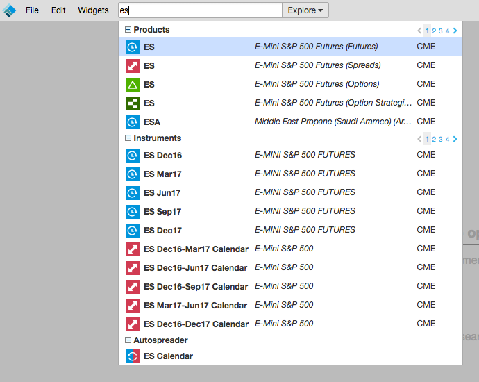
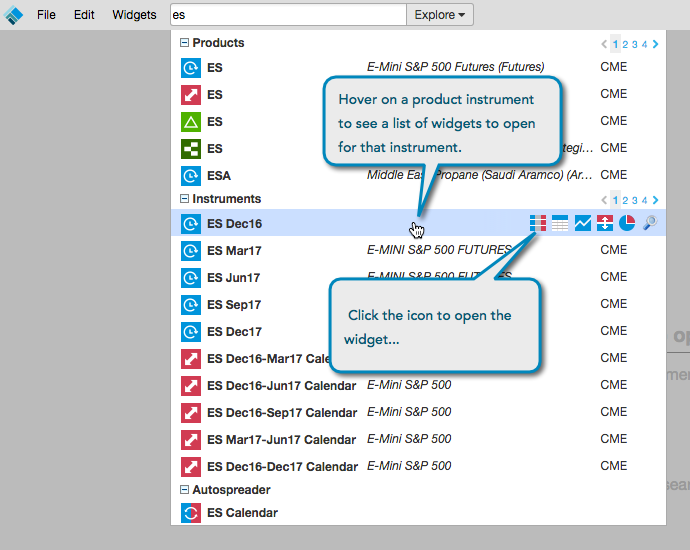

After creating or opening a workspace, you can search and find an instrument as follows:
Enter an exchange, product type, product, symbol, or instrument name in the Search box in the title bar.
Tip: You can also enter keywords to search for an instrument (e.g., natural gas, soybeans, oil, etc.).

In the search results, the market data is grouped and listed by product and instrument. The list of available products and instruments varies by exchange.
Hover over the product name or instrument name to view a list of widgets that you can open.
The available widgets will vary per product, product type, and instrument. For example, you can only launch an MD Trader for a specific product instrument.

Click on the widget to open it (e.g., MD Trader).
Tip: Opening a widget for a product will open all available contracts (instruments) for that product.